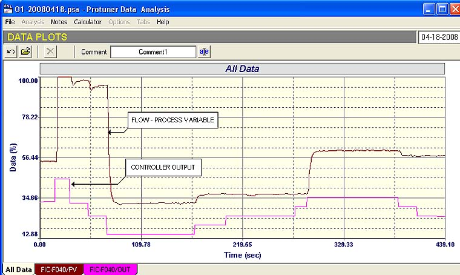

|
| [Home] [About us] [Contact us] [Training] [Optimisation services] [Protuner] |
| [Loop signatures] [Case histories] |
|
Control Loop Case History 102 Its quite fascinating when it comes to control that most industries have their own peculiarities, differences, and particular problems. In certain industries such as chemical, petro-chemical, and pulp and paper, one generally finds fairly sophisticated control systems and strategies in place. In particular these plants generally purchase top makes of DCS’s, and use the very best control valves. This is probably due to the facts that many of the early famous control engineers came from these industries, and also of course that their control systems are recognised as being of the utmost importance. The electrical power industry really stands out when it comes to differences in approach to regulatory control. For example one of the biggest and best known manufacturers of control systems has a completely unique approach to control in this industry. I really believe that way back in early days of control development in the early 20th century; their power control group developed their own unique and completely different approach to control. Their control systems for the power industry are structured in such a way that is sometimes incomprehensible to me, and also to most of their users whom I have discussed this with. However the same manufacturer also makes control systems for other industries, and these are entirely conventional. I find this strange. Industries such as steel and mining are in my opinion, generally amongst the least sophisticated when it comes to regulatory control. They mostly use less leading-edge control equipment like PLC/SCADA systems as opposed to DCS systems, and will try and get away with cheaper and less sophisticated valves like butterfly valves wherever possible. However in the mining industry in particular, it must be mentioned that one is very limited as far as valves are concerned, particularly when it comes to dealing with fluids like slurries, which are extremely abrasive. In these cases one is limited to relatively crude valves like Dart and pinch valves. Because of this, there has been a tendency to rather use variable speed pumps in this application which offer markedly improved performances. I believe that the degree of success in control performance in any plant can be directly correlated to the amount of interest, knowledge, and understanding of regulatory control existing amongst the process and production experts and management in the plant. In most chemical and petro-chemical plants these people have generally had control included as a mandatory subject in their university training, so they do realise how important control is. However in, many other industries the process and production people who have not had this training often look at control as a sort of “necessary evil”. They often regard it as of secondary importance, and many think that optimisation can be carried out by low level disciplines. As mentioned in many previous articles, the general fallacy exists that optimisation only means tuning, and in turn, that tuning will solve all problems. It is absolutely essential that any optimisation exercise needs teamwork and strong management support. Optimisation can be rarely carried out successfully purely by the efforts of the Control and Instrumentation (C&I) Department. It is essential they receive support and process guidance from production and process people who need to work with them to achieve the best results. Process and production management and experts should attend a course on practical control so they can really understand all the aspects of optimisation. My experience has shown that their enthusiasm and support really dramatically increases after they have been on such courses, and in fact they often become the major driving force behind successful optimisation exercises. This is because they now have a good understanding of the practicalities of control and can now appreciate how much controls can really improve plant performance in numerous ways, and in particular make them less operator dependent. The process people in mining and steel plants are generally metallurgists who mostly have had little or no control training in their studies. This is probably one of the main reasons why the control systems in these industries are often less progressive than in some of the other industries previously mentioned. Apart from lack of understanding of control
amongst process personnel, the mining industry has its own
particular problems brought about mainly by the harsh materials
and conditions that exist in mining processes.
I have written about these in several previous Case
History articles. Living
in On my first visit to the average mining plant, I generally find that virtually none of the control loops are operating reasonably. In most cases where PLC’s are used for the control, the PID control blocks are set up incorrectly. On one mine which had been running for close on a decade, I actually found that none of the PID blocks were working at all, as the system integrator had written his own PID block which was completely incorrect. However I have previously written a lot about these things in other articles dealing specifically with digital PID control blocks. The examples in this article are taken from some optimisation work recently performed at a mine where the management has taken a decision to really try and improve control performance. I was agreeably surprised to find that the mine was not using PLC’s for control, but had purchased a well known make of DCS. There was a choice between two PID blocks in the system, one called a “simple” controller, and a slightly more sophisticated one called a “universal” controller. Once again it became immediately apparent that the people who had originally programmed the system for the, mine, had very little knowledge of practical control, and in particular of the operation of PID controllers and options available in sophisticated DCS systems. The first thing of note was that on each
control block there was a choice of whether the response on
setpoint change should be on error (SP-PV) which is a full
‘P+I+D’ response, or on ‘P+I’, or on ‘I’ only.
The default of the DCS was ‘I’ only.
(A full description of this is given in the digital
controller section of my Part 1 Loop Signature articles, which
is available on CD for people outside Now an ‘I’ only response is fine for control where you really don’t want to bump the process by making a step change in setpoint. It allows the setpoint change to be accomplished really slowly with only integral action reacting to the change. However it is completely useless in cases where one would like a fast response to setpoint. In mining applications there are many cases where the Operator needs to make setpoint changes. An example of this is for varying plant throughputs. In many cases when using ‘I’ only response on setpoint change, the control reaction to the change is so slow that the operator learns that it is much faster and easier to make changes in manual. Apart from this there are cases where the setpoint is coming from a remote source such as in the case of ratio, or cascade control, or in cases where advanced control systems have been instituted. Apart from this one of the most important things to be aware of is that no tuning at all can be accomplished with ‘I’ only action. This is because tuning can only really be tested properly by making step changes in setpoint, and if you make a step change in setpoint and see only ‘I’ action, then you cannot see what is happening at all. In all plants where one finds all controllers left in a default ‘I’ only response to setpoint change, then you can immediately deduce that no successful tuning can ever have taken place in that plant! I have been in many plants including large petro-chemical refineries and paper mills, where this has been the case. The amazing thing concerning this, is that very few people know about it, and even more amazing that the manufacturers of the control equipment don’t mention it in their manuals or training courses. It literally “boggles” the imagination. The second thing that was of interest in this DCS system was that whilst the “universal” controller performed perfectly, the “simple” controller did not. When this controller was used it became immediately apparent that tuning parameters were not being executed properly in the controller. I always test the controller operation whenever I encounter controllers in PLC’s so as to ensure they have been set-up properly. However normally DCS systems are so good this is not necessary. However in this case when the “simple” control block was tested, it was found that the proportional gain setting inside the controller was out by a factor of as much as 20%. The problem was solved by changing over all blocks using the “simple” controller to the “universal” one. It is hard to believe that a reputable manufacturer can turn out equipment with such a large basic error in it. You would surely believe that they would test the operation of a control block before releasing the software. The first example of a problem loop is of an important flow on a section of this plant. This was an air flow. The air is used to help separate certain mineral components, and it is essential that the flow strictly followed setpoint with absolutely minimum variance. The operators were very unhappy with this loop and had difficulty in even trying to control it in manual. Figure 1, which is an open loop test, explains why. In such a test the process variable (i.e. the flow in this case), should follow the steps in the controller output. It can be clearly seen in the figure that this is not the case. The valve did not respond at all on some steps. It is pretty obvious that the valve not only has large hysteresis, but even after it had gone through reversals in direction, it did not move freely and stuck frequently.  Fig. 1 Another serious problem exists insomuch that the valve is very badly oversized, as can be seen by the large movement of the PV compared with small steps on the PD (controller output). (Refer to a previous Loop Signature articles on process gain). Another indication of the oversize can be seen from the fact that the valve is operating far too low down. Maximum flow is reached in the first 30% of valve opening. This is very bad for control. (A general “rule of thumb” for modulating control valves is that they should preferably operate under normal load conditions above 20% from the closed position. Oversized valves amplify their problems on the PV, but even so it would appear that the valve besides being so sticky is also non-repeatable, as when the PD is at a particular value at several points in the test, the value of PV did not reach the same value, even though the valve had moved freely on the previous step. In any event, the valve was operating so badly, that any form of control would be impossible, until it was sorted out. It was in fact recommended that the valve should be replaced with a smaller one. In the next part of this article which should be published in two months time, some more very interesting examples of problems encountered on this mine will be givenMichael
Brown is a specialist in control loop optimisation, with many years of
experience in process control instrumentation. His main activities are
consulting, and teaching practical control loop analysis and
optimisation. He gives training courses which can be held in clients'
plants, where students can have the added benefit of practising on live
loops. His work takes him to plants all over South Africa, and also to
other countries. He can be contacted at:
|